Bachelor Eindwerk
Groep Pluto
Door Ruben Mennes, Ruben Vereecken, Eveline Ververs & Thomas Pinna
Overzicht
- File Formaten
- Post Processing
- Dynamic attributes
- Visualisatie
- Datastructuur
- Distributed Simulation
- Slot
File Formaten
- Inleiding
- Conversie
- Simulatie
Inleiding
- PLY formaat
- Breadth first doorlopen van ptree
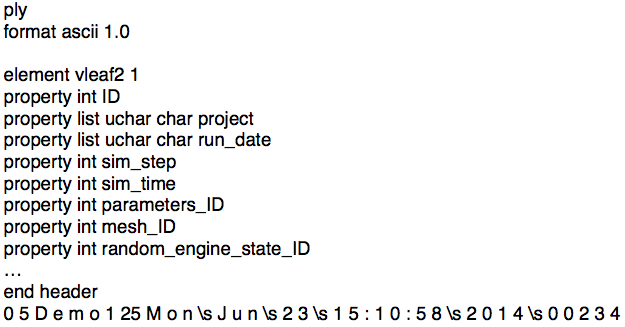
Conversie
- Design
- Analoog aan xml/xml.gz
- Minder opzoekwerk code
- Makkelijk uitbreidingen doorvoeren
- CLI & GUI
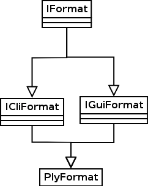
Simulatie
- Design
- Analoog aan xml/xml.gz
- Simulaties starten
- Export
- Problemen met export naar ply
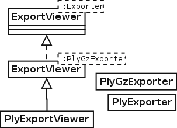
Simulatie
Export probleem
template <> template <> void ExportViewer<PlyGzExporter>::Update<SimEvent>(const SimEvent& e);
template <> template <typename EventType> void ExportViewer<PlyGzExporter>::Update(const EventType& e);
Post Processing
- Inleiding
- TSV Formaat
- Gui
Inleiding
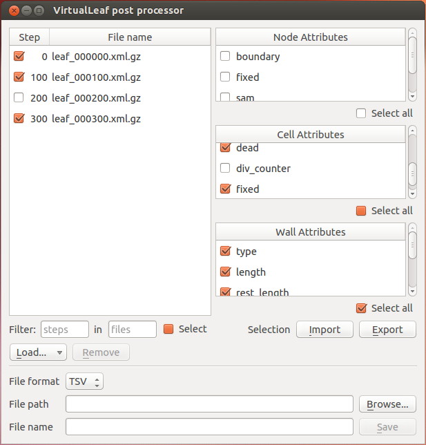tsv Formaat
- Design
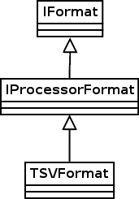
tsv Formaat
- 2 formaten
- TYPE ATTRIBUTE
- Aanpasbaar
- Overzichtelijk
- STEP TYPE ATTRIBUTE ID VALUE
- Attributes volgen doorheen simulatie
- Makkelijk visualiseren
GUI
- Load Vleaf file(s)
- Selection Widget
- Import/Export Selection
- Save
Dynamic Attributes
- Inleiding
- Moeilijkheden en Keuzes
Inleiding
- Huidig: chemische attributen in Mesh structuur
- Uiteindelijk doel:
- Mesh en "Tissue" scheiden in code
- Dynamisch chemische attributen toevoegen/verwijderen/aanpassen
- Model inlezen uit Vleaf file
Moeilijkheden en keuzes
"container" dynamic_attributes
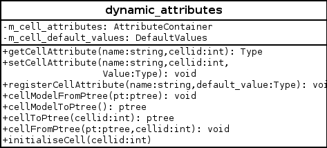
- Methodes voor Node en Wall
- Methodes die een volledig model inlezen/wegschrijven
Moeilijkheden en keuzes
Integratie dynamic_attributes in code
- Mesh bevat dynamic_attributes object
- De klassen Cell-/Node-/WallAttributes krijgen pointer naar object (via constructor)
- Bestaande methodes door methodes uit dynamic_attributes
- Assignment operators toegevoegd
- MeshBuilders aangepast zodat ze attributen ook kopiëren
Moeilijkheden en keuzes
Formaat Model
<cell_attributes_array>
<attribute>
< name>
attributeName
</name>
< type >
int
</type>
< default >
7
</default>
</attribute>
</cell_attributes_array>
Suggesties
- Meer types toevoegen (bvb vectoren)
- Dynamic_attributes niet meer in Mesh bewaren
- Integratie in user interface
Visualisatie
- Inleiding
- Moeilijkheden & Keuzes
- Architectuur
- Resultaat en vergelijking
Inleiding
- Huidige viewer in Qt geïmplementeerd
- Vraag naar OpenGL viewer
- Richting 3D (in de toekomst)
- Viewer met reliëf
Moeilijkheden & Keuzes
- OpenGL Compatibiliteit
- GL 3.1 + Compatibility Profile
- Gebruik van shaders? Uiteindelijk niet.
- Correcte weergave van schaduw
Architectuur
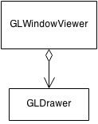- Alle implementatie in GLDrawer
- Zeer low level
- Performantiewinst
Vergelijking
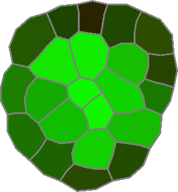 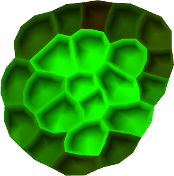Resultaat
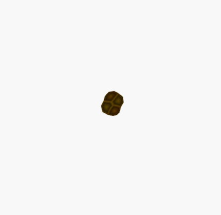Feature: Rotatie

DataStructuur
- Inleiding
- Implementatie
- performancewinst
Inleiding
- Huidige situatie
- Cells, Nodes en Walls gealloceerd op stack
- Willekeurig in geheugen
- Veel cachemisses!
- Gebruik van vector<shared_pointer<Cell>> voor lifetime management
- Doel:
- Performantiewinst
- Beter lifetimemanagement
Implementatie
- Gebruik van geoptimaliseerde datastructuur
- Intern een vector<array<T>*>
- Waarbij T een Cell, Node of Wall
- Gevolg:
- Geheugen in blokken gealloceerd
- Cells, Nodes en Walls dichter bij elkaar
- High locality of data => minder cachemisses
Performancewinst
| Gem. zonder | Afwijking zonder | Gem. met | Afwijking met | Winst | |
|---|---|---|---|---|---|
| Demo 1 | 648.654ms | 805ms | 499.752ms | 707ms | 22,96% |
| TipGrowth | 8.263ms | 91ms | 8.037ms | 89ms | 2,74% |
| Globaal | 3.749.877ms | 1.936ms | 3.134.383ms | 1.770ms | 16,41% |
Soms tot 30% winst
Gedistribueerde simulatie
- Inleiding tot het probleem
- Architectuur
- Protocol
- Slave beheer en Master lookup
- Fouten tolerantie
Inleiding tot het probleem
- Verschillende afzonderlijke simulaties kunnen een koppling hebben
- 1 simulatie runnen is een zwaar process. Meerdere niet aan te raden op 1 machine
- Simulaties laten runnen en enkel de output files zijn belangrijk
Oplossing
Severs ter beschikking stellen, die het process beheren en uitvoeren
Architectuur
Algemeen

- Client en masters communiceren met elkaar
- Master en slaves communiceren met elkaar
Architectuur
Slave

- Slave krijgt berichten van de master
- Slave zal de VLeaf2_Sim::Sim aansturen
- Na elke stap zal de ChemTransfer de gevraagde waarde doorsturen naar Master
Architectuur
Master
- Master is de instantie die de SlavePool, DistSimPool en ClientHandler aanmaakt, opstart en controleert
- ClientHandler zal alle Client requist afhandelen en alle beschibare clients bijhouden
- SlavePool bevat al de Slaves die momenteel niet behoren tot een sessie
- DistSimPool bevat al de lopende sessies

Architectuur
Master
- DistSimControl bevat 1 enkele sessie en zal deze controleren
- ReletadSlaves bevat al de Slaves die behoren tot deze sessie
- Coupler is de instantie die de daadwerkelijke koppling op zich neemt
- Observer zal er voor zorgen dat de output files worden opgeslagen
Architectuur
Opmerking
- Master bevat enkel noodzakelijke Cellattributen
- Voordelen
- Consistentie
- Geheugen
- Nadelen
- Onderhoudbaarheid
Protocol
- Gebaseerd op bestaande protocol van Parex
- TCP-socket tussen Master en Clients en tussen Master en Slaves
- Structuur van een bericht is XML (gebruik van ptree)
Protocol
Structuur
<Control>{Naam van de berichtstructuur}
<ID>{Session ID indien nodig}</ID>
<Data>{Andere nodige data voor dit bericht}</Data>
</Control>
Protocol
Structuur: Voorbeeld
<Control>Join
<ID>1</ID>
<Data>100</Data>
</Control>
Protocol
Uitzonderingen t.o.v. afgesproken protocol
- Ander 'startSimulation' message
- Ondersteuning van meerdere output formaten op de Master
- Alle TCP-berichten worden gezipt
- Zowel voor gedistribueerde sessie als voor Parex
- Berichten (met SimState) tot meer dan 8 keer kleiner
- Minder bandbreedte wordt gebruikt
Slave beheer en Master lookup
Slave beheer: Probleem
- Als slaves crashen moeten deze manueel worden heropgestart
- Bij manueel heropstarten moet IP adres en poort van master gekend zijn
- Slaves kunnen maar verbinding maken als de Master zelf ook actief is
Slave beheer en Master lookup
Slave beheer: Oplossing
- Slaves worden beheerd door een slave_deamon
- Opstarten van slaves als master die hiernaar vraagt
- Kijkt na of slaves gecrashed zijn
- Master bevat lijst met mogelijke slave machines
- Master zal elke 5 seconde UDP bericht sturen naar deze machines
- Als deamon merkt dat er minder slaves runnen dan master vraagt start hij er op
Slave beheer en Master lookup
Master lookup: Probleem
- Clients moeten IP adres en poort van master kennen
- Als client een session wilt joinen ook het session ID
Slave beheer en Master lookup
Master lookup: Oplossing
- Client kan UDP broadcast sturen met vraag naar masters
- Masters zullen antwoorden met UDP bericht en bevat:
- Poort waarmee client verbinding moet maken
- Alle lopende sessies op die machine
Fouten tolerantie
Mogelijke problemen
- Slave crasht
- Verbinding met slave verbroken
- Te weinig slaves beschikbaar
- Master crasht
Fouten tolerantie
Slave crasht of verbinding met slave verbroken
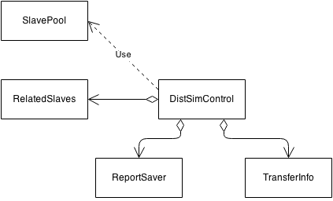
- DistSimControl beschikt over ReportSaver deze zal het laatste report bijhouden
- DistSimControl beschikt over TransferInfo waarin staat welke slaves welke info moeten terug sturen
- Als DistSimControl merkt dat slave gecrashed of niet bereikbaar is haalt hij andere uit SlavePool en initializeert ALLE slaves opnieuw
Fouten tolerantie
Wat als er geen slaves beschikbaar zijn?

- Zelfde principe als vorige probleem
- DistSimControl wordt in queue gezet en BrokenParts worden aangeduid
- Genoeg Slaves beschikbaar
- DistSimControl uit de queue
- Alle Slaves worden geherinitialiseerd
Fouten tolerantie
Wat als master crasht
Voorlopig nog geen oplossing voor
Wat hebben we geleerd
- Documentatie
- Code conventions
- Templates